Qui sommes-nous ?
La Plateforme_ est une école du numérique et des nouvelles
technologies co-fondée avec le Club Top 20 réunissant les grandes
entreprises de la Métropole Aix Marseille. Elle comprend une offre de
formations diversifiées destinées à former des développeurs web,
logiciels, des experts en sécurité, des ingénieurs spécialisés en
Intelligence Artificielle et systèmes immersifs, et des cadres
d’entreprises au travers de cycles de formations continues.
technologies co-fondée avec le Club Top 20 réunissant les grandes
entreprises de la Métropole Aix Marseille. Elle comprend une offre de
formations diversifiées destinées à former des développeurs web,
logiciels, des experts en sécurité, des ingénieurs spécialisés en
Intelligence Artificielle et systèmes immersifs, et des cadres
d’entreprises au travers de cycles de formations continues.
La Plateforme_ est membre du programme Grande Ecole du
Numérique. Elle est soutenue par de grandes entreprises du territoire
comme le Crédit Agricole Alpes Provence, par la Région Sud, le
Département des Bouches du Rhône et la Métropole Aix Marseille
Provence.
La Plateforme est reconnue Établissement d’Enseignement
Supérieur Technique Privé de l’académie Provence Alpes Côte
d’azur, enregistré sous le numéro 01344255
Nos partenaires
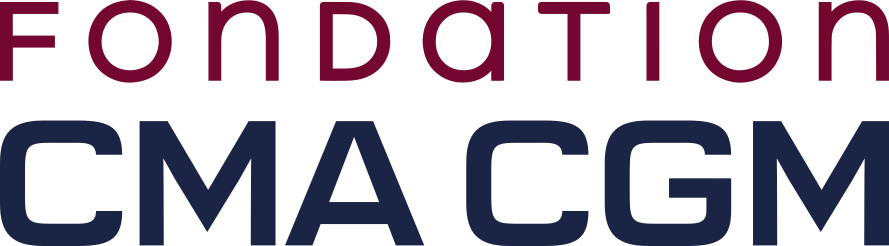
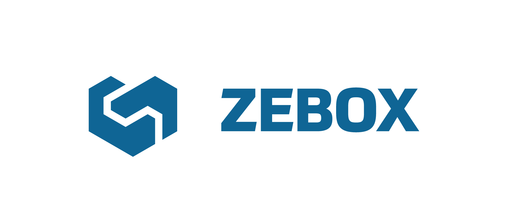


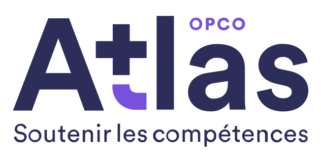
 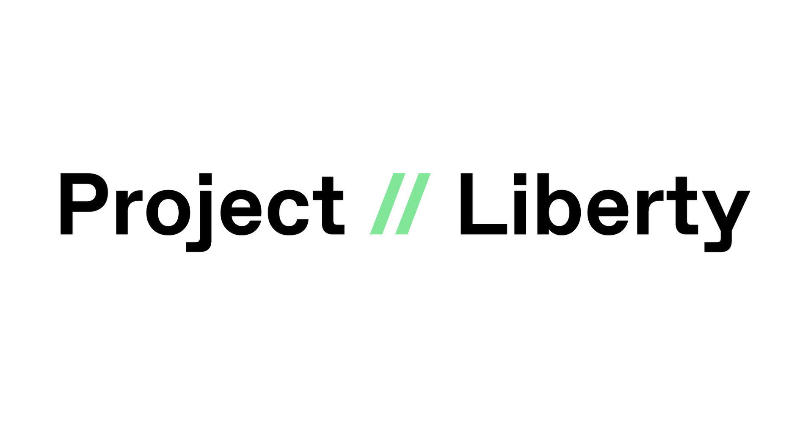
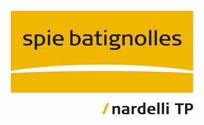
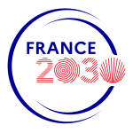
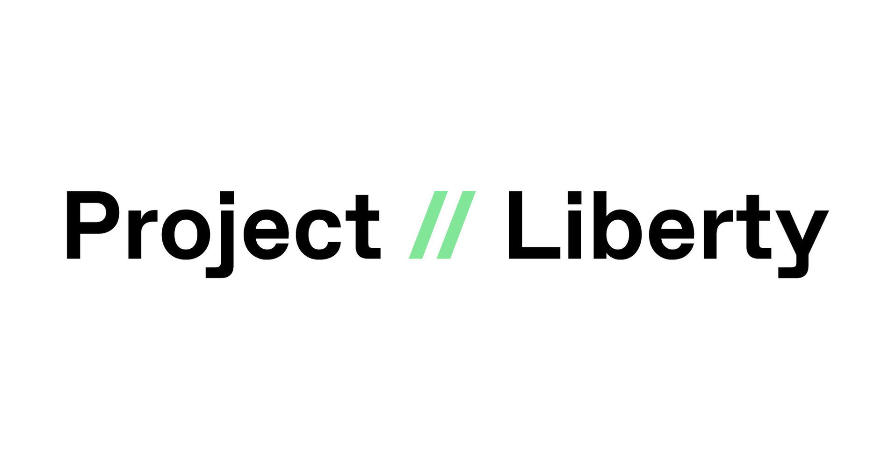
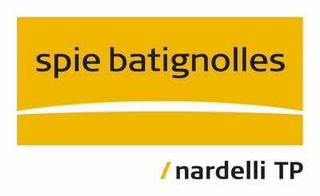
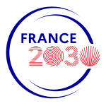
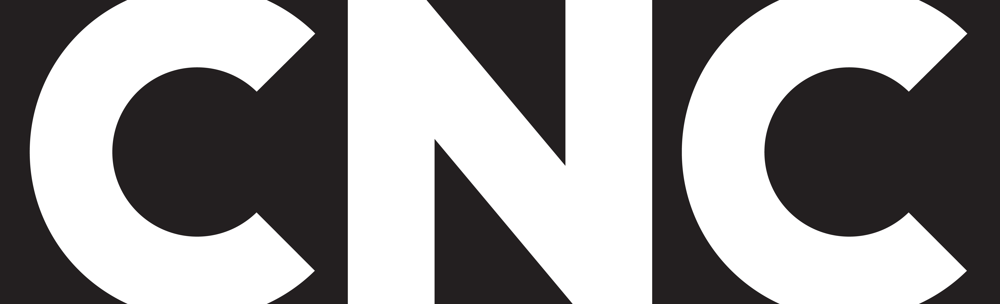
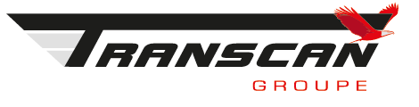
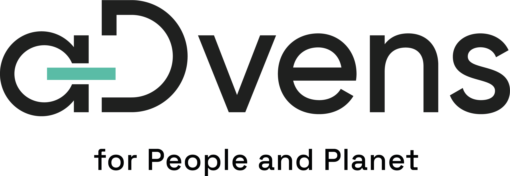
Membre du réseau GEN

Membre de l'initiative

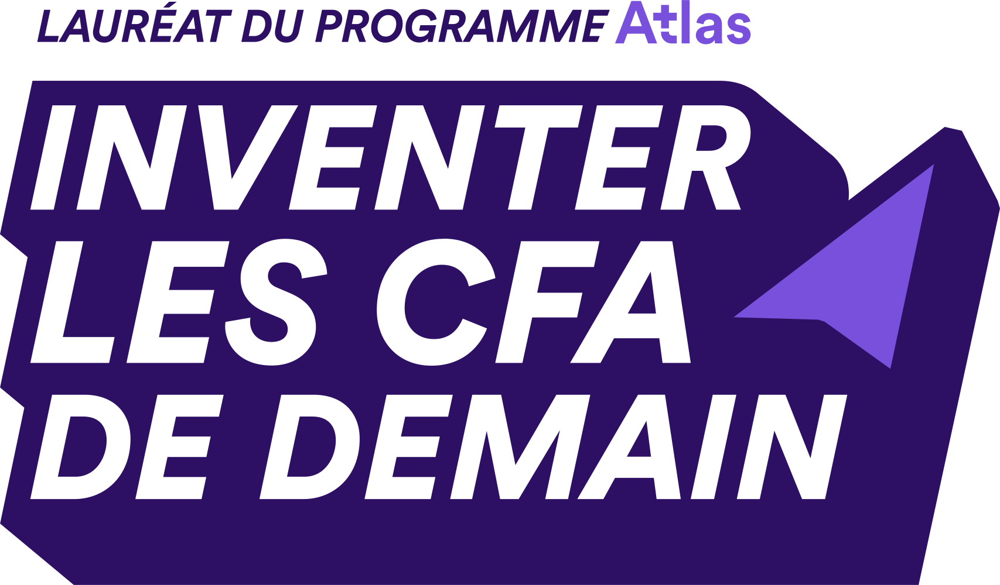
Nos certifications
La Plateforme Marseille a
obtenu la certification qualité
depuis le 18 septembre 2020
au titre de la catégorie des
actions de formation.
obtenu la certification qualité
depuis le 18 septembre 2020
au titre de la catégorie des
actions de formation.

La Plateforme Formation a
obtenu la certification qualité
depuis le 23 mai 2022 au titre
des catégories des actions de
formation, actions de formation
par apprentissage.
obtenu la certification qualité
depuis le 23 mai 2022 au titre
des catégories des actions de
formation, actions de formation
par apprentissage.

La Plateforme_ est membre de l’April,
soutient et contribue à des projets Open
Source.
L’April est une association pionnière du
logiciel libre en France. Elle démocratise la
diffusion du logiciel libre et des standards
ouverts auprès du grand public, des
professionnels et des institutions.
soutient et contribue à des projets Open
Source.
L’April est une association pionnière du
logiciel libre en France. Elle démocratise la
diffusion du logiciel libre et des standards
ouverts auprès du grand public, des
professionnels et des institutions.
La Plateforme_ est membre de l’AFCDP.
L’AFCDP est L’Association Française des
Correspondants à la protection des Données
à caractère Personnel. Elle regroupe les
Délégués à la protection des données (DPO)
et tous les professionnels de la conformité,
RGPD, CNIL.
L’AFCDP est L’Association Française des
Correspondants à la protection des Données
à caractère Personnel. Elle regroupe les
Délégués à la protection des données (DPO)
et tous les professionnels de la conformité,
RGPD, CNIL.
La formation est accessible aux personnes
handicapées. L’école est équipée d’un
ascenseur pour accéder aux étages.
Adaptation des moyens de la prestation.
handicapées. L’école est équipée d’un
ascenseur pour accéder aux étages.
Adaptation des moyens de la prestation.
Présentation
Cyril Zimmermann
Fondateur de La Plateforme_
Denis Philipon
Président du Top20
Serge Magdeleine
Directeur Général du Crédit Agricole
Alpes-Provence